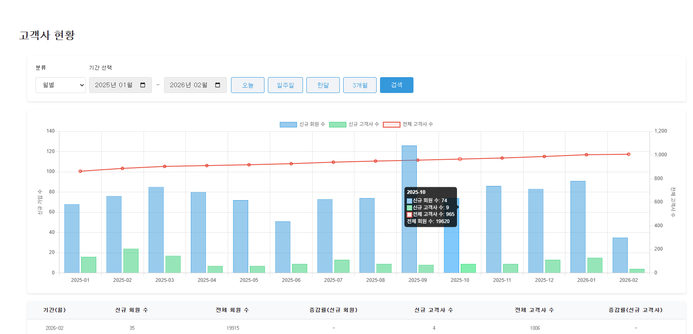
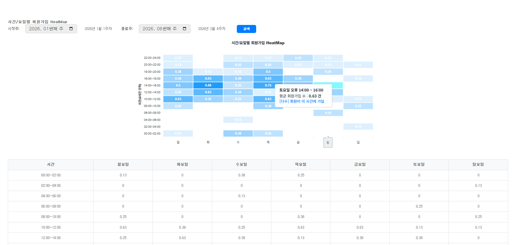
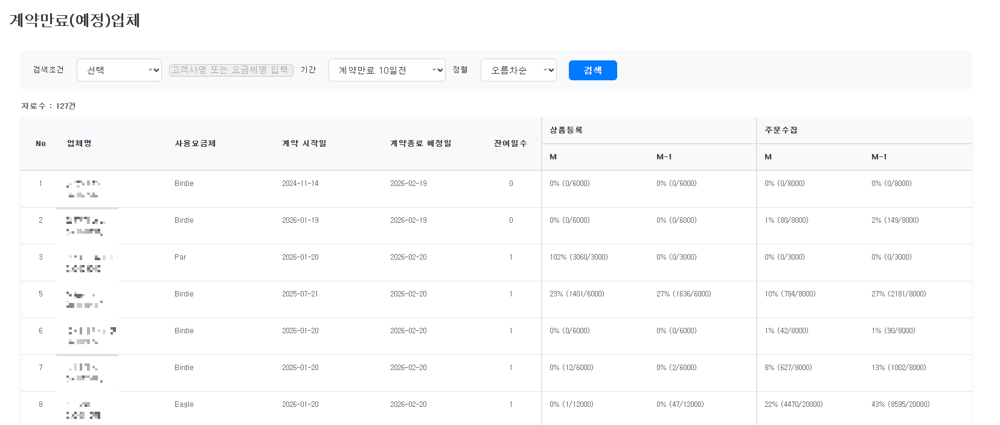
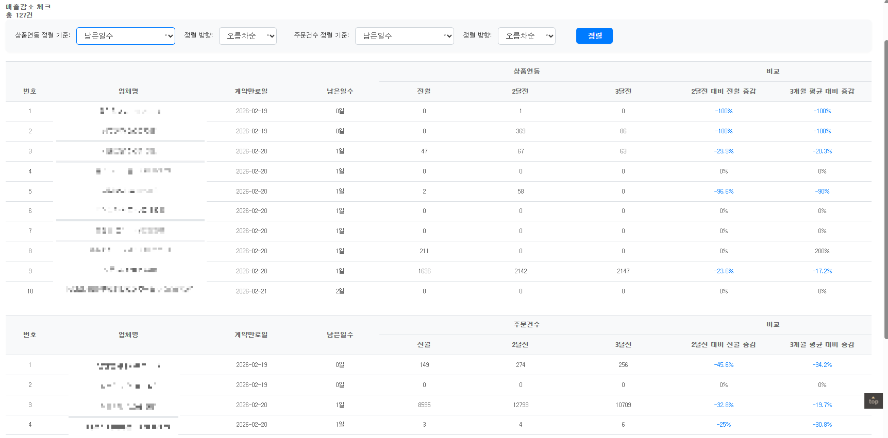
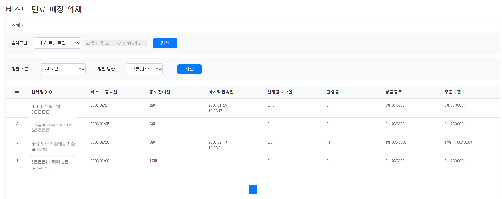
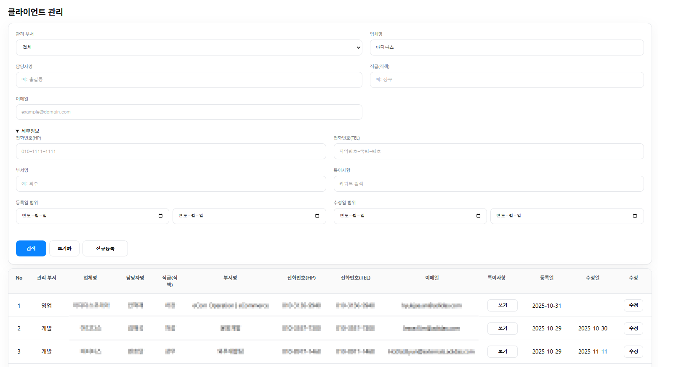

PHP 기반 백엔드 개발자로서 쇼핑몰 통합관리 시스템에서 주문, 상품, 클레임, 배송, 통계, 내부 운영 기능을 개발·유지보수해왔습니다. 외부 API 연동과 내부 관리자 시스템 개발을 함께 수행했고, 실제 운영 환경에서 발생하는 장애와 데이터 정합성 이슈를 로그와 데이터 흐름을 기반으로 분석하고 재발 방지 구조로 개선하는 데 강점이 있습니다.
약 175개 쇼핑몰 API 연동 로직 개발 및 유지보수를 수행했고, 누적 작업 경험은 1800건 이상입니다. 주문·상품·클레임 연동뿐 아니라 택배사 송장 발번/출력 시스템, 고객사 운영 관리, 통계 대시보드, 내부 API 및 배치 프로그램까지 폭넓게 담당했습니다. 특히 대형 고객사 커스터마이징과 운영 이슈 대응 경험이 많아, 단순 기능 구현보다 실제 서비스 안정성과 운영 효율을 함께 고려하는 개발 방식을 지향합니다.
다양한 플랫폼의 인증 방식, 데이터 포맷, 주문/클레임 구조 차이를 고려한 API 연동 및 유지보수 경험
신규 개발, 기능 개선, 운영 이슈 대응, 고객사 커스터마이징, 배치 및 내부 운영 기능까지 폭넓게 수행
대량 발번 지연 이슈 대응 과정에서 비동기 처리와 재시도 로직을 적용해 성공률과 처리 속도를 개선
아래 프로젝트는 실제 업무 경험 중 포트폴리오로 보여주기 적합한 대표 사례만 추려 정리한 것입니다. 신규 기능 개발뿐 아니라 운영 툴, 통계 페이지, 장애 대응 및 성능 개선 경험까지 포함했습니다.






Name: 오태훈
Position: Backend Developer
Experience: 4년 (2022.03 ~ 현재)
Email: thoh1993@naver.com
GitHub: https://github.com/terryoh123